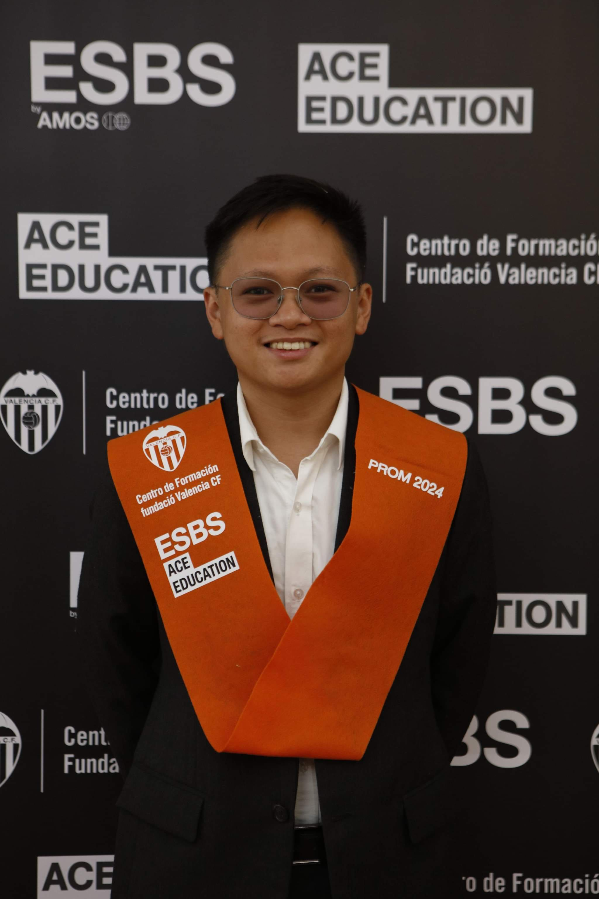
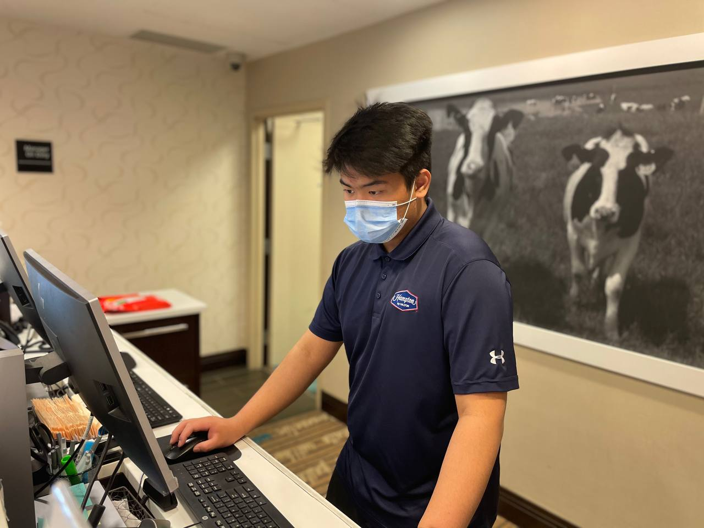

Say Hello to the Members!

Paolo
Paolo is a dedicated and hardworking team member who played a key role in keeping the project on track. Throughout the development process, he demonstrated strong consistency and responsibility by completing assigned tasks on time and maintaining clear communication. When the team size decreased, Paolo stepped up and took on additional responsibilities without hesitation, which helped ensure that progress continued smoothly. He remained focused and motivated, contributing ideas during discussions and collaborating effectively to solve problems. His reliability and positive attitude made him someone the team could depend on, and his overall effort had a significant impact on the success of the final project.

Cyrus
Cyrus took on a leadership role in overseeing the final stages of the project, using his experience in website development to ensure everything was properly structured and functional. He was responsible for reviewing the overall project, fixing technical issues, and making sure all components worked together seamlessly. In addition, he handled the final touches, including refining the design, improving usability, and preparing all required deliverables for submission. Cyrus also helped guide the direction of the project by offering solutions and ensuring that important details were not overlooked. His ability to troubleshoot problems and maintain organization played a major role in producing a polished and complete final product.